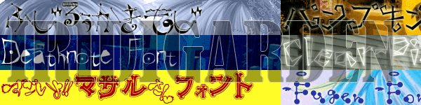

【リンクについて】
IRIDIGARDENはリンクフリーです。事後連絡をいただけるととても嬉しいです。
フォントサイトさまとの相互リンクを募集しています。
リンクの際は、以下の情報をお使いください。
サイト名：IRIDIGARDEN（イリディガーデン）
管理人：いりも
小さいバナー
<a href="http://mnlab.sakura.ne.jp/garden/">
<img src="http://mnlab.sakura.ne.jp/garden/ban.gif"
border=0 alt="IRIDIGARDEN"></a>
大きいバナー(フリーフォント最前線で使っていました)

【フォントサイト】
相互募集です！お気軽にどうぞ〜